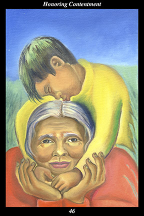

 | IMAGEA female warrior receives the affection of her grandson.
|
INTERPRETATION
This hexagram depicts the source of contentment. The female warrior symbolizes the feminine creative force, who conceives in order to nurture and sustain what is valuable. Her grandson symbolizes the extended family of all our loved ones, all our friends, all our relations. That she receives her grandson’s affection means that you open your heart to the overflowing joy abiding in the eternal moment of love unreservedly shared. Taken together, these symbols mean that you increasingly find meaning and power in acts of simple and unadorned affection.
ACTION
The feminine half of the spirit warrior embodies the wellspring of blessings. Just as that which is truly loved is truly nurtured and that which is truly nurtured truly grows greater, that which receives blessings is destined to dispense them: only those who feel whole-hearted gratitude for the blessings borne by ordinary and everyday circumstances are able to give others the kind of pure and unselfish love that truly nurtures greatness. True greatness is greatness of spirit, just as true love is love of another’s spirit: if we wish to encourage others, we must reflect the loving-kindness that shines upon us. It is a time, in other words, for more than simply feeling content—it is a time for honoring our contentment by directing our joy into gratitude for the blessings bestowed by the divine unseen forces. Sanctifying the love we share with those in front of us helps crystalize the love we share with those behind us: allowing ourselves to be loved by those we can see teaches us to allow ourselves to be loved by those we cannot see. It is to our spiritual ancestors that we turn, then, when we honor contentment, for it is in the company of the ancestors that we find our home. Because we are destined to eventually become one of the ancestors, it is only natural that we come to be better able to sense the love, care, and guidance they give us every moment. Dwelling in the deep and abiding sense of fulfillment that comes with loving and being loved, therefore, makes us better able to see the spirit of our loved ones and understand how to nurture the greatness of each. In this, we repeat what we learned from those who truly saw our spirit and truly nurtured its greatness. It is in this manner that everyday moments of pure, unselfish love are transformed into bridges that span all the generations, binding them together in the single act of universal love.
INTENT
The continuity that binds the generations together arises from the meaning and power of the memories each of us make of our experiences—and the meaning and power of each memory arises from the emotions and insights we possess while in the midst of its experience. For this reason, there are few actions we can take that are more significant and beneficial than honoring contentment. In this sense, contentment means that you whole-heartedly experience the joy of being a loving part of a loving universe, whereas honoring means that you see spirit within every form and nurture its metamorphosis. Toward this end the spirit warrior trains to love every thing in creation as though it were a grandchild.
SUMMARY
Recognize moments when you are content. Recognize moments when you are at peace. Recognize moments when you feel love. Do not let these moments pass unnoted: share them with spirit and thank spirit for its blessings and vow to spirit that you will work hard to deserve many more such moments. Be good company for spirit and you swim in the sea of bliss.
THE LINE CHANGES
1° When circumstances get the better of people, long-suffering courage gives way to hopelessness. You must fight your way out of this morass—to just stay here will allow matters to worsen. Force yourself to exercise and eat better—then find a place to volunteer and help others less fortunate.
2° When people are fortunate enough to have companionship and security, they can become self-satisfied and then stop growing. It is one thing to celebrate good fortune and another to sink into mere gratification of the senses. Always support the best in each other, not the worst.
3° When people are given a futile task, they take it to heart and allow it to affect their self-confidence. Once you appreciate that it is infinitely better to fail at a futile task than an achievable one, you will regain your composure. Bring out your flexible half again—this is a test of character, not ability.
4° When people are haunted by old wrongs, they keep returning to the memory in hope of laying it to rest—but peace of mind seems to take forever to arrive. Your commitment to untying this old knot is finally rewarded and you bring this misery to an end. There is no reason to revisit it ever again.
5° When leaders are unable to fulfill the expectations placed on them, they are publicly humiliated. If you accept blame without shifting it to others or making any excuses, then those above and below forgive you and allow you a fresh start. Your honesty and sincerity bring
benefit to all eventually.
6° When circumstances overwhelm people with unforeseeable changes, sensible cautiousness gives way to paralysis. You cannot hold on to what is valuable by refusing to act—introspect here and see where this timidity began. Make a decision now that excites you about the future.